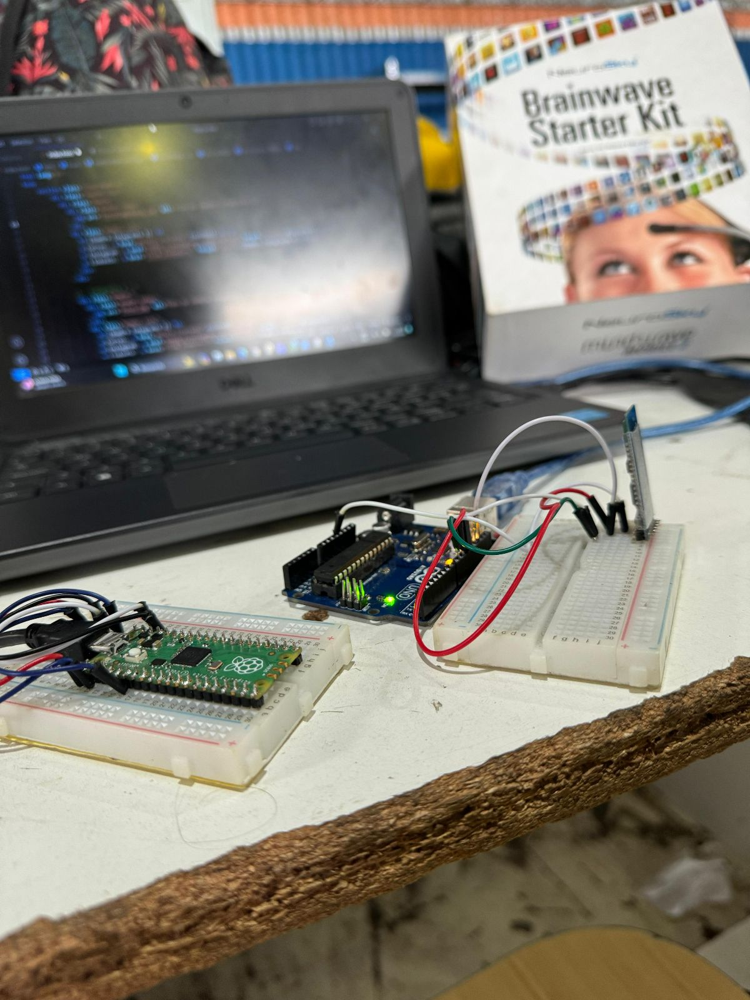
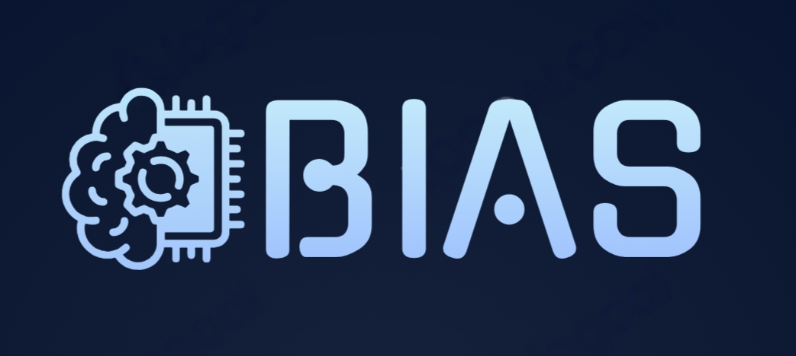

Revolucionando la movilidad con BIAS
Silla de ruedas controlada por la mente
Futurista, hecha por estudiantes del IMPA


Innovadora
Descubre el futuro de la movilidad, controla tu silla de ruedas sin esfuerzo con señales cerebrales y explora un nuevo reino de independencia y conveniencia.
- control
- independencia
- conveniencia
Automática
Deja que tus señales cerebrales impulsen la silla de ruedas automáticamente. Disfruta de la facilidad y simplifica la navegación para un viaje más fluido.
- movimientos automáticos
- cómoda de usar
Sin esfuerzo
Experimenta un movimiento sin esfuerzo mientras la silla de ruedas responde a la perfección a tus señales cerebrales. BIAS prioriza la comodidad y la eficiencia.
- tecnología responsable
- control intuitivo
Conoce a nuestro equipo
Miembros del equipo

Santiago Sojka
Diseño de estructura y Marketing

Danilo Diaz
Trabajo en motores

Luciano Montenegro
Líder

Ian Gil Soria
Diseño de placas

Luca Deblasi
Programador de motores

Nicolas Adell
Programador de la IA